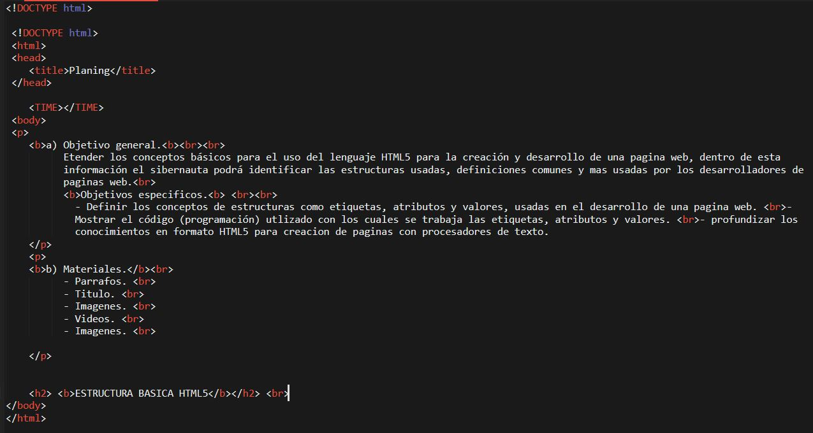

a) Objetivo general.
Etender los conceptos básicos para el uso del lenguaje HTML5 para la creación y desarrollo de una pagina web, dentro de esta información el sibernauta podrá identificar las estructuras usadas, definiciones comunes y mas usadas por los desarrolladores de paginas web.
Objetivos especificos.
- Definir los conceptos de estructuras como etiquetas, atributos y valores, usadas en el desarrollo de una pagina web.
- Mostrar el código (programación) utlizado con los cuales se trabaja las etiquetas, atributos y valores.
- profundizar los conocimientos en formato HTML5 para creacion de paginas con procesadores de texto.
b) Materiales.
- Parrafos.
- Titulo2.
- head.
- body.
- Negrita.
- salto de linea.
- Recurso 1: pulsa aqui para visitar el recurso definciones y estructuras.
- Recurso 2: pulsa aqui para vistar el recurso de etiquetas, atributos y valores.
- Imagenes.
- Imagen 1
- Imagen 2 Haz clic aqui
- Videos.
- Video 1 HTML para principiantes pulsa aqui para ver el video
- Video 2 HTML para principiantes pulsa aqui para ver el video
c) Contenido.
Que es HTML5?
Lenguaje que se usa para desarrrollar paginas de internet, actualmente se encuentra en la versión HTML5, estas siglas obedecen a la Hyper Tex Markup Language a lo español formato de lenguaje de Hipertexto; este código se escribe mediante etiquetas entre simbolos como menor a mayor < >, como tambien tiene un lenguaje que permite escribir titulos parrrafos, insertar imagenes, tanto locales como externas como los alojados en los servidores de la web, aunque existen otros lenguajes para desarrollar codigo para paginas web como Python, java Scrip, para este trabajo lo haremos con HTML.
Estructura.
el código HTML tiene estructura para su código de programación, en base a esto se construye una página web:
Atributo.
los atributos se definen en cuatro grupos:
* Basicos: son usados en la mayoria de las etiquetas HTML y XHTML, común mente son usadas en hojas de estilo en cascada.
* Internacionalización: atributo usado en páginas que muestra la información en varios idiomas.
* Evento: se usa en páginas que en su desarrollo incluye código java scrip, asi pueden realizar acciones dinámicas sobre los elemntos creados en ella.
* Foco: Se denomina Foco al cualquier evento que quiera ser controlado al ser seleccionado sobre algun objeto de la página web.
Etiquetas.
son códigos que usa HTML para la escritura del código, estas etiquetas pueden ser leidas por los programadores sin necesidad de ser compiladas primeramente, estas etiquetas dan instrucciones al navegador web para que muestre el contenido de la pagina WEB.
Etiquetas HTML basicas.
Head
Indica la parte inicial o cabecera del documento en el cual puede insertar una imagen, logo, o una frase o lema para la pagina WEB, tambien puede tener una cabecera para un sitio especifico de la página.
!DOCTYPE html
Es la primera línea que debe ser escrita en el documento ya que indica la versión actual que HTML tiene.
body
Indica la parte del cuerpo de la página WEB, .
- para mas ejemplos Has: clic aqui
Valores.
Son propiedades asignadas a los atributos de los elemenetos, los cuales definen una propiedad al elemento, por ejemplo podemos entonces decir que hay elementos de tipo numeros o texto, donde los valores numero y texto definen la propiedad del elemento donde no se puede guardar una letra en el elemento de tipo numero.
Ejemplo de codigo de HTML
- ejemplo codigo HTML Haz clic aqui
Si te gusto el tema de esta pagina no debes perderte de estos videos.
- Video 1 HTML para principiantes pulsa aqui para ver el video
- Video 2 HTML para principiantes pulsa aqui para ver el video
Mockup.
maqueta de la página elaborada en Framebox.